AlexSci Hierarchy & Roles

ECPC:
- Egyptian Collegiate Programming Contest, the Regional contest of Egypt, which qualifies teams
to
participate in
ACPC (Africa and Arab Collegiate Programming Championship).
- مسابقة البرمجة التنافسية المصرية لطلاب الجامعة، المسابقة الإقليمية لمصر، والمؤهلة للمنافسة في
البطولة
العربية
والإفريقية (ACPC).
- يُعلن عن ميعادها من خلال صفحة المسابقة.
- مكانها بالأكاديمية العربية البحرية للعلوم والتكنولوجيا بأبي قير.
AlexSci:
- فريق يمثل المؤسسة التعليمية الخاضع لها (كلية العلوم - جامعة الإسكندرية) والمسجلة على موقع ICPC.. ومن
خلال
الفريق تعلن المسابقة عن أنشطتها ويكون الكيان الذي يرجع إليه طلاب الكلية للتواصل مع المسابقة أو الاستفسار
عن
أي شيء يخصها.
- يُنظم المسابقة الداخلية (التصفيات) المؤهلة إلى المسابقة المصرية (ECPC) في حالة طلب إدارة ECPC إنشاء
مسابقة
داخلية.
AlexSci Leader:
- طالب يمثل ويدير AlexSci ويكون حلقة الوصل بين طلاب الكلية وبين إدارة المسابقة.
- مسؤول أمام المسابقة عن صحة وسلامة بيانات الفرق المشاركة بالمسابقة من الكلية.
General departments representative:
- طالب من الأقسام العامة (علوم الحاسب والإحصاء والرياضيات وغيرهم).
- ممثل الأقسام العامة.
- حلقة الوصل بين الفريق والأقسام العامة.
- مساعد ممثل الفريق ويمكن أن يمثل الفريق في حالة غياب أو حدوث أي مكروه لممثل الفريق.
- يُرجع إليه مع ممثل القسم الخاص في تحديد بعض قرارات الفريق.
SIM department representative:
- طالب من القسم الخاص.
- ممثل القسم الخاص.
- حلقة الوصل بين الفريق والقسم الخاص.
- مساعد ممثل الفريق ويمكن أن يمثل الفريق في حالة غياب أو حدوث أي مكروه لممثل الفريق.
- يُرجع إليه مع ممثل القسم العام في تحديد بعض قرارات الفريق.
- في حالة أي يحدث في الفريق يكون التصويت بين ممثل الفريق وممثل القسم العام والقسم الخاص ويؤخذ برأي
الغالبية (2 على الأقل من 3)
Scientific Committee Head:
- ليس شرطًا أن يكون طالب بالكلية.
- شارك في المسابقة المصرية مرة على الأقل.
- مسؤول عن إعداد تدريب لطلاب الكلية (بمساعدة أعضاء اللجنة العلمية).
- مسؤول عن وضع مسائل وإرسالها إلى إدارة المسابقة.
- مسؤول عن إنشاء مسابقات داخلية بالكلية (للتدريب أو تصفيات مؤهلة للمسابقة المصرية).
Media Committee Head:
- ليس شرطًا أن يكون طالب بالكلية.
- مسؤول عن التنسيق بين اللجنة الإعلامية للمسابقة ومعرفة مواعيد الأنشطة للتجهيز والإعلان عنها.
- مسؤول عن منشورات مواقع التواصل مثل الإعلان عن الأنشطة ومواعيد المسابقة أو المناسبات (مثل الإعلان عن
تدريب بالكلية).
- الرد عن استفسار طلاب الكلية من خلال وسائل التواصل (بالتنسيق مع اللجنة العلمية).
HR Committee Head:
- ليس شرطًا أن يكون طالب بالكلية.
- مسؤول عن مراجعة بيانات الطلاب المشاركين في المسابقة من الكلية (مثل صورة البطاقة أو البيانات الشخصية
لحساب المتسابق على موقع ICPC).
- بالتنسيق مع ممثل كل قِسم يستخرج بيان قيد جماعي لطلاب القسم (عام أو خاص).
- مسؤول عن معرفة رأي ومشاكل المتدربين في حالة إقامة تدريب (بمكان أو أونلاين).
PR Committee Head:
- ليس شرطًا أن يكون طالب بالكلية.
- مسؤول عن العلاقات العامة بين الفريق والمؤسسات الخارجية.
- مسؤول عن حجز قاعة بالكلية (أو خارجها) للتدريب في حالة إقامة تدريب بمكان.
- مسؤول التعامل والتنسيق مع الفِرق الأخرى في الكلية وخارجها.
Organization Committee Head:
- ليس شرطًا أن يكون طالب بالكلية.
- مسؤول عن تنظيم الفعاليات أو الندوات.
- مسؤول عن تنظيم القاعة في حالة التدريب أو في حالة المسابقات الداخلية.